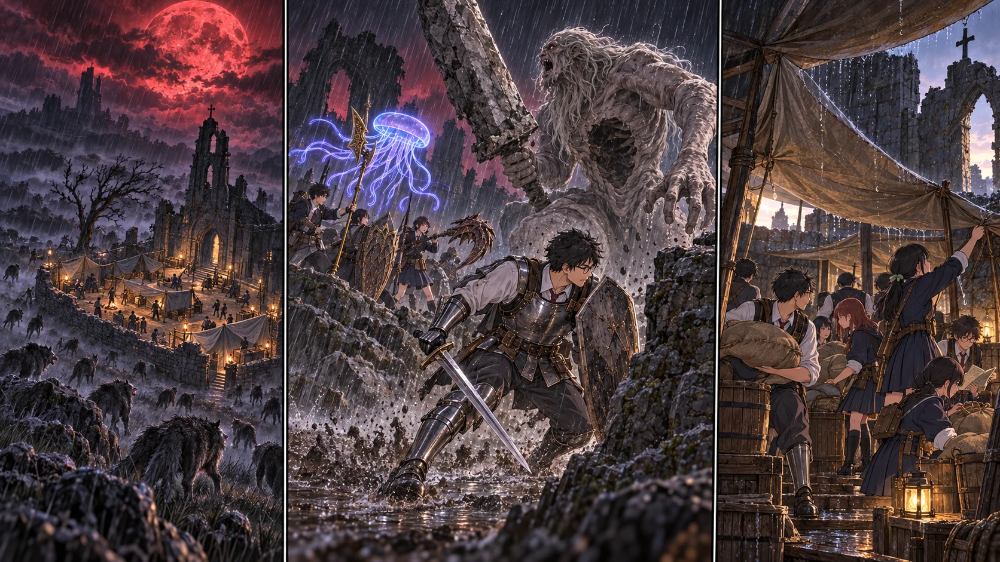

DAY70夜 → DAY71朝 / TURN1−80
赤い月の下で、灯りを消す。

翼「荷物はこっち。人は、先に中へ！」
【DAY70｜昼のうちに】先生は、日が沈んでから作業を始めないようにと伝えた。残っていた調理済みの食料を先に配り、今日の狩りで得た分を次へ回す。布を張り直し、食料を地面から上げ、水の容器に覆いを掛ける。誰がどの荷を運ぶかまで、第三チームは昨日の手順を確かめた。
夕方、風が変わった。教会の欠けた壁を鳴らし、古い天幕の端が大きく膨らむ。空に出た月は、前の赤月よりもまた大きい。赤い光が雨粒へ映り、遠い木々の幹まで濡れたように色づいた。普段の安全な道が、夜の向こうへ消えていく。
【備蓄保護｜2d6＋4＝13】天幕の端が裂けた。「荷物はこっち。人は、先に中へ！」。翼が声を上げ、凛が乾いた板の上を指した。佑真は小さな荷を拾う前に、まだ外にいる者を数える。人力で補修した石壁は風を受け止め、その内側へ箱と袋が移された。
湊は聖印を握っていたが、まだ祈らなかった。傷ついた人はいない。今必要なのは、誰がどこにいるかを知らせる声と、濡らさずに残す食料だった。新しい回復を覚えたからといって、使う理由を探す必要はない。
【狼の影｜2d6＋4＝12】外から低い唸りが重なった。十の影が、雨に紛れて教会の周囲へ近づく。先生は入口へ全員を詰め込まず、主力を分けた。低い壁の切れ目を健太と陽太が押さえ、直人と大地が踏み込める幅を残す。
一頭が飛び込んだ。健太が盾を向け、隣へ抜けようとしたところを槍で止める。もう一頭へ直人が爪を落とした。大きな武器は、仲間の間で振り回さない。花と千夏は前衛が空けた方向だけへ射ち、悠と拓海が接近する影を捉える。六頭が倒れると、残った四頭は暗がりへ下がった。
だが、足音は止まらなかった。木の向こうから、枝より高い頭が出てくる。巨人だった。嵐丘の方から降りてきたらしい影が、教会に残る灯りへ顔を向けていた。すでに倒したボスが戻ったのではない。いつもの行動範囲を越えて、別の危険が近づいている。
先生は灯りを落とさせた。「ここで受けない。外へ向ける」。教会の壁が狼を止められても、あの一撃まで保証するものではない。先生は主力の援護が届く側へ回り、巨人の前に姿を見せた。背後には石の出っ張りと、戻れる道を残す。
【巨人の誘導｜2d6＋4＝13】クララの傘が青紫に浮いた。先生が動き、巨人の顔がそちらを追う。大きな剣が地面へ下りたとき、先生は岩の脇へ抜けた。石が砕ける。あれを教会へ振らせなくてよかったと、思う時間すら短かった。
矢と術が横から届き、巨人が振り向きかければ先生がまた前へ出る。主力も一か所へ固まらない。仕留めようとして足元へ殺到するのではなく、教会から目を離させたまま、距離を保った。健太は先生が戻る通路へ盾を向け、追われている者の退路を塞がなかった。
教会では結衣が点呼を続けていた。第三チームは夜の取水に出ず、容器と食料を動かし終えると、内側の空間を確保する。美咲と澪は軍馬を落ち着かせた。馬を慣れていない夜戦へ出すことはしない。
【DAY70夜 → DAY71朝｜夜明け】雨が弱まり、月の赤さが薄れていった。巨人の足音は、教会から離れる方へ移った。先生は追撃を命じず、見える範囲から十分離れたのを確かめて、全員を戻した。敵を倒し切らなくても、この夜の目的は果たせる。
三十三人、返事が揃った。負傷なし。食料と医療用の布も失っていない。古い天幕の端に裂け目は残ったが、積んだ石と運び込んだ荷は、そのまま朝を迎えた。翼が腰を下ろす。昨日、凛に荷を減らせと言われた意味が、今になって腕の疲れとしてわかった。
先生は明るくなった空の下で、次の赤月の日を見た。八十日目。今回守れたことを、次も同じ方法で守れるという約束にはしない。それでも今日は、生きて朝食を食べられる。その事実を先に皆へ伝えた。
今回の判定記録
| 判定 | 出目 | 補正 | 合計 |
|---|
| base | 6+1 | 3 | 10 |
| shelter | 5+4 | 4 | 13 |
| wolves | 3+5 | 4 | 12 |
| giant | 4+5 | 4 | 13 |
抽選前の条件 · 抽選結果